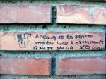

De: La Frikipedia, la enciclopedia extremadamente seria.
De: La Frikipedia, la enciclopedia extremadamente seria. De: La Frikipedia, la enciclopedia extremadamente seria.

|
FRIKIPEDIA QUIERE QUE ESTA DEFINICIÓN
PASE A SER UN ARTÍCULO FRIKIPÉDICO La información contenida en este artículo es una mínima parte de su jugo total, así que ponte los guantes, saca el tupperwere y empieza a exprimir el tema. Si lo haces serás recompensado con una galleta en almíbar y algo más. |
| De la serie Países del planeta tierra: | |||||
| Líbano | |||||
|---|---|---|---|---|---|
| |||||
| Lema: {{{lema_nacional}}} | |||||
| Himno: {{{himno_nacional}}}
| |||||
| 
| |||||
| Capital | Kazagistán | ||||
| Mayor ciudad | Kabul | ||||
| Lenguas oficiales | Libanés, turco | ||||
| Gobierno | Gobierno sombrío de tipo R | ||||
| Sombra | Megaman | ||||
| Área | Restringida | ||||
| Población | Mala | ||||
| Moneda | Esbástica | ||||
| Zona horaria | GTM +34 -38 | ||||
| Dominio Internet | .ケジ | ||||
| Código telefónico | 3
| ||||
| No hay bien que por mal no venga ni mal que no venga | |||||
País al norte de Somalia. Al este limita con Aldebarán y al oeste con la costa suroriental del Abismo del Fin del Mundo. Sus habitantes se denominan dinosaurios. Se dividen en diferentes etnias que jamás se entremezclan (pues dan como bástagos cadáveres y son condenados al exilio).
Los dinosaurios siempre se caracterizaron por ser unos concienzudos trabajadores, que hacían horas extra gratis siempre que tenían oportunidad. Conformaban una economía exitosa con exportaciones de todo tipo de productos manufacturados de gran calidad y denominación de orígen hacia todo el mundo.
Debido a la emisión contínua de Gran Hermano en todas las cadenas, gran parte de los dinosaurios sufrieron embolias y fueron dados por judíos jubilados, borrándolos de la seguridad social. Esto condujo a una menor productividad y de menor calidad y a la fundación el PP (Partido de Parados), en el que los judíos jubilados hacían porras en partidos de fútbol. Éste movimiento de dinero sumergió la economía y obligó a subir los impuestos sobre el waldofio.
Tras un largo papeleo, un ingeniero dinosaurio logró convencer a los políticos de que si instalaban SRASR (Sistemas de Reciclaje Altamente Sofisticados para Retretes) en todos los hogares podrían relanzar su economía y dar una imagen de éxito ante la Comunidad Internacional. De esta forma su economía alcanzó un elevadísimo valor en bolsa y actualmente es uno de los paises más influyentes en occidente, con exportaciones de Mierda de Dinosaurio™ a todo el mundo que suponen más del 99% del PMM (Peso de Mierda en el Mercado).
La idea de los SRASR no fué bien recibida por los somalíes, que querían abarcar toda la producción libanesa de saco inagotable de dinero como Godzilla, que lideró la conversión en mierda de todos los edificios de Líbano y parte del resto del mundo durante la Guerra de Frígida.
Tras la invasión de Somalia a Líbano se vieron comprometidas las producciones de mierda, y con ello multitud de intereses; entre ellos los de Hasecorp, que envió un ejército de mineros zombis entrenados al efecto a desalojar a los somalíes. Sin embargo los mineros zombis no estaban entrenados para matar dinosaurios, así que tuvieron que llamar a los Power Rangers, cosa que no les resultó fácil pues en ese momento estaban de vacaciones en Turquía, pero que en un acto de generosidad altruista aceptaron a cambio de que se les diera el 90% de las producciones de Mierda de Dinosaurio™. Esto forzó al fin de la guerra, y los mineros zombis pudieron dedicarse a lo que realmente querían que era poner joyerías.
| |
|---|
| Arabia Saudita • Azerbaiyán • Bahrein • Bangladesh • Bután • Birmania • Brunéi • Camboya • Emiratos Árabes • Indonesia • Jordania • Kuwait • Kirguistán • Maldivas • Nepal • Omán • Qatar • Singapur • Sri Lanka • Tayikistán • Timor Oriental • Yemen |
Autor(es):